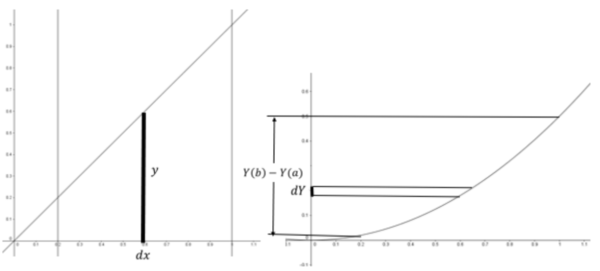

Section 10.3 The Fundamental Theorem of Calculus
If you look back at the derivation of the Integral Form of the Remainder for Taylor Series (
Theorem 4.1.9) you’ll see that the Fundamental Theorem of Calculus was our anchor step. We assumed you were familiar with it from your Calculus course. In fact the Fundamental Theorem Of Calculus was known in various forms before Newton and Leibniz invented Calculus. They both provided derivations of it via the use of the infinitely small, but neither of them dubbed this “The Fundamental Theorem.” Both considered it very natural to apply the problem of antidifferentiation to that of finding areas. Consider Leibniz’ derivation from his 1693 paper titled
Supplementum geometriae dimensoriae, seu generalissima omnium tetragonismorum effectio per motum: similiterque multiplex constructio lineae ex data tangentium conditione.
which translates into
More on geometric measurement, or most generally of all practicing of quadrilateralization through motion: likewise many ways to construct a curve from a given condition on its tangents.
In fact Leibniz invented the differential and integral notation that we still use today because it is so well designed. Suppose that \(\dfdx{Y}{x}=y\text{,}\) then \(y\dx{x}=\dx{Y}\text{.}\) Since these are differences, then integrating them just adds these differences together. Thus we have
\begin{equation*}
\int^b_{x=a}{y\dx{x}}=\int^b_{x=a}{\dx{Y}}
\end{equation*}
(We are utilizing definite integral notation which was later addition by Fourier.) Anyway, Leibinz already knew that a finite sum of finite differences collapsed into the difference of the extremes as below.
\begin{equation*}
\left(a_2-a_1\right)+\left(a_3-a_2\right)+\dots +\left(a_{n-1}-a_{n-2}\right)+\left(a_n-a_{n-1}\right)=a_n-a_1
\end{equation*}
Leibniz surmised that it would work for infinite sums of infinitesimals as well. This gives
\begin{equation*}
\int^b_{x=a}{y\dx{x}}=\int^b_{x=a}{\dx{Y}}=Y\left(b\right)-Y(a)
\end{equation*}
For Leibniz, this idea so natural, you can see why he called his paper a “supplementum.” Leibniz included a picture with both \(y\) and \(Y\) sharing an axis, but we will provide a more modern rendition with the graphs of \(y=\dfdx{Y}{x}\) and \(Y\) separated.

In the above graphs, the area of the infinitely thin rectangle on the left is given by \(y\dx{x}\) and is numerically equal to the infinitely small length \(\dx{Y}\text{.}\) Adding the areas on the left gives the area under the curve \(y(x)\) and the sum of the lengths on the right gives the length \(Y\left(b\right)-Y(a)\text{.}\)
Of course, such a proof relying on infinitesimals would not pass 19\({}^{th}\) century (or modern day) rigor. Also, there is a question which surfaced as to if a given continuous function would always have an antiderivative. We have the tools to provide a rigorous proof of the Fundamental Theorem of Calculus with a proviso: we need to rigorously define what an integral is, which is more delicate than one might anticipate. We’ll do this in the next section, but for now, let’s utilize our knowledge of integration from Calculus and what we have proven in the last section to provide a more careful statement and proof of the Fundamental Theorem of Calculus. This formulation and proof is essentially Cauchy’s in his Résumé des leçons donnés à l’ école royale polytechnique sur le calcul infinitesimal (1823).
Theorem 10.3.1. The Fundamental Theorem of Calculus (Cauchy).
Suppose \(f\left(x\right)\) is continuous on \([a,b]\) and define
\begin{equation*}
I\left(x\right)=\int^x_{t=a}{f\left(t\right)\dx{t}}
\end{equation*}
for \(x\in [a,b]\text{.}\) Then \(I\) is continuous on \([a,b]\text{,}\) differentiable on \((a,b)\) and
\begin{equation*}
I^\prime\left(x\right)=f(x)
\end{equation*}
Before we get into the proof of this, notice that it doesn’t look like Leibniz’ version. Leibniz’ version follows from this as indicated in the problem below. As before, \(f\left(x\right)\) is continuous on \([a,b]\text{.}\)
Problem 10.3.2.
Suppose \(F(x)\) is continuous on \([a,b]\) and \(F^\prime\left(x\right)=f(x)\) on \((a,b)\text{.}\) Prove that for any \(x\in [a,b]\text{,}\)
\begin{equation*}
\int^x_{t=a}{f\left(t\right)\dx{t}}=F\left(x\right)-F(a)
\end{equation*}
In particular,
\begin{equation*}
\int^b_{t=a}{f\left(t\right)\dx{t}}=F\left(b\right)-F(a)
\end{equation*}
Hint.
You have two antiderivatives of
\(f(x)\text{.}\) By part (c) of
Problem 10.2.16, these must differ by a constant. What must this constant be?
Let’s now look at the idea behind proof of Cauchy’s version of the Fundamental Theorem of Calculus. Some of these ideas should look familiar.
Outline of Proof.
Let \(x\in (a,b)\text{.}\) First, we want to show that
\begin{equation*}
I^\prime(x) =
\limit{h}{0}{\frac{\int_{t=a}^{x+h}f(t)\dx{t}-\int_{t=a}^x
f(t)\dx{t}}{h}}=\limit{h}{0}{\frac{\int_{t=x}^{x+h}f(t)\dx{t}}{h}}=f(x)\text{.}
\end{equation*}
With this in mind, let
\(m\) be the minimum and
\(M\) be the maximum of
\(f(t)\) on the closed interval with endpoints
\(x\) and
\(x+h\text{.}\) By the
EVT,
\(f(t)\) takes on its maximum and minimum at some points inside the interval, say
\(f\left(c\right)=m\) and
\(f\left(C\right)=M\) for some
\(c, C\) between
\(x\) and
\(x+h\text{.}\)
If \(h>0\) we have
\begin{equation*}
f\left(c\right)\cdot h\le
\int^{x+h}_{t=x}{f(t)\dx{t}}\le f(C)\cdot h
\end{equation*}
Dividing by \(h\) we get
\begin{equation*}
f\left(c\right)\le \frac{\int^{x+h}_{t=x}{f(t)\dx{t}}}{h}\le f\left(C\right)
\end{equation*}
If \(h\lt 0\text{,}\) we have \(-h>0\text{,}\) and so
\begin{equation*}
f\left(c\right)\cdot \left(-h\right)\le
\int^x_{t=x+h}{f(t)\dx{t}}\le f\left(C\right)\cdot (-h)
\end{equation*}
\begin{equation*}
f(c)\le \frac{\int^x_{t=x+h}{f(t)\dx{t}}}{-h}\le f(C)
\end{equation*}
Which still leads us to
\begin{equation*}
f(c)\le \frac{\int^{x+h}_{t=x}{f(t)\dx{t}}}{h}\le f\left(C\right)
\end{equation*}
Applying the squeeze theorem as \(h\to 0\) and continuity of \(f\) at \(x\) should do the trick.
This takes care of differentiability (and continuity) on \((a,b)\text{.}\)
To get continuity at \(a\) and \(b\text{,}\) we will appeal to Theorem 8.2.1 relating continuity and sequences. With that in mind, consider any sequence \((x_n)\) contained in \([a,b]\) converging to \(a\) we want to show that
\begin{equation*}
\limit{n}{\infty }{\left(\int^{x_n}_{t=a}{f(t)\dx{t}}-\int^a_{t=a}{f(t)\dx{t}}\right)}
=\limit{n}{\infty }{
\left(\int^{x_n}_{t=a}{f(t)\dx{t}}\right)}=0
\end{equation*}
To get continuity at \(b\text{,}\) consider any sequence \(\left(y_n\right)\) in \([a,b]\) converging to \(b\text{.}\) We want to show that
\begin{equation*}
\limit{n}{ \infty }
{\left(\int^b_{t=a}{f(t)\dx{t}}-\int^{y_n}_{t=a}{f(t)\dx{t}}\right)
}=\limit{n}{\infty } {\left(\int^b_{t=y_n}{f(t)\dx{t}}\right)}=0
\end{equation*}
We can use an argument similar to what we did before, but in this case, since we are not dividing, we can just consider the minimum \(m\) and maximum \(M\) of \(f\) on \([a,b]\) so that \(m\le f\left(t\right)\le M\text{.}\)
Problem 10.3.3.
As we said earlier, how do we know that a continuous function on a closed interval has an antiderivative? Equivalently, how do we know that
\begin{equation*}
I\left(x\right)=\int^x_{t=a}{f(t)\dx{t}}
\end{equation*}
actually exists?